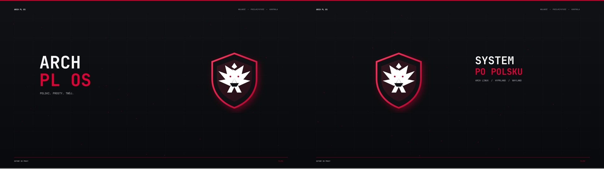

Wszystko po polsku
Panel, launcher, powiadomienia, blokada, diagnostyka i instalator używają naturalnego języka polskiego.
Polski pulpit dla Arch Linux
Spójne, szybkie i przejrzyste środowisko Hyprland stworzone od początku dla polskich użytkowników.
ARCH PL OS
Nie kolejna dystrybucja. Kompletny, odtwarzalny pulpit dla Arch Linux: polskie komunikaty, polskie daty, polskie instrukcje i jeden konsekwentny projekt wizualny.
Projekt pulpitu
Dwa ekrany, jedna kompozycja. Karmazyn, biel i głęboki grafit. Bez zbędnych ozdobników.

Panel, launcher, powiadomienia, blokada, diagnostyka i instalator używają naturalnego języka polskiego.
Konfiguracja pozostaje zwykłym kodem. Możesz ją czytać, zmieniać, aktualizować i przywracać.
Płynne okna, firmowe powitanie i wielomonitorowy wygaszacz działają lekko i konsekwentnie.
Instalacja
Instalator wykrywa monitory, doinstalowuje zależności, tworzy kopię obecnej konfiguracji i ustawia polskie środowisko.
$ git clone https://github.com/zi3lak/arch-pl-os.git
$ cd arch-pl-os
$ ./instaluj.shW zestawie
Dla kogo
ARCH PL OS jest dla polskich użytkowników, którzy oczekują szybkości Arch Linux, ale nie chcą składać całego pulpitu z dziesiątek niespójnych poradników.